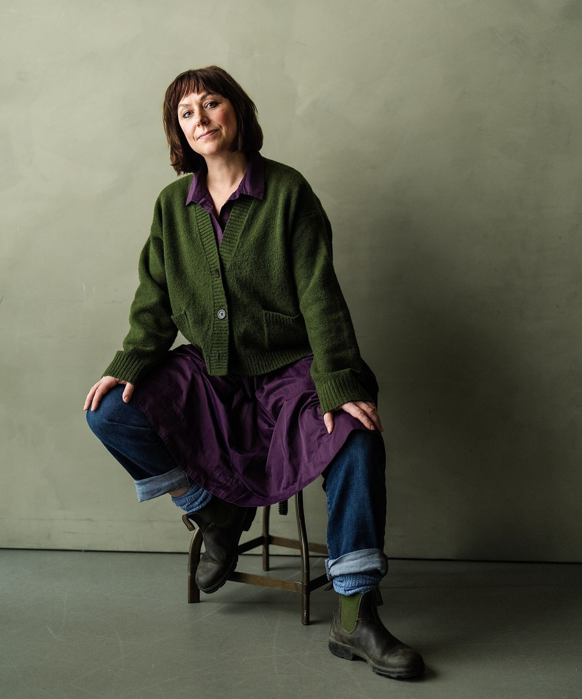
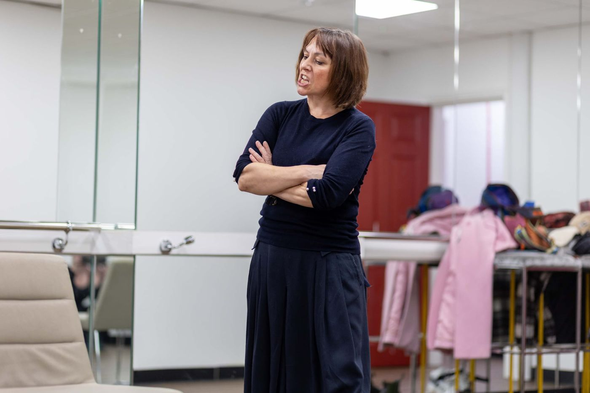
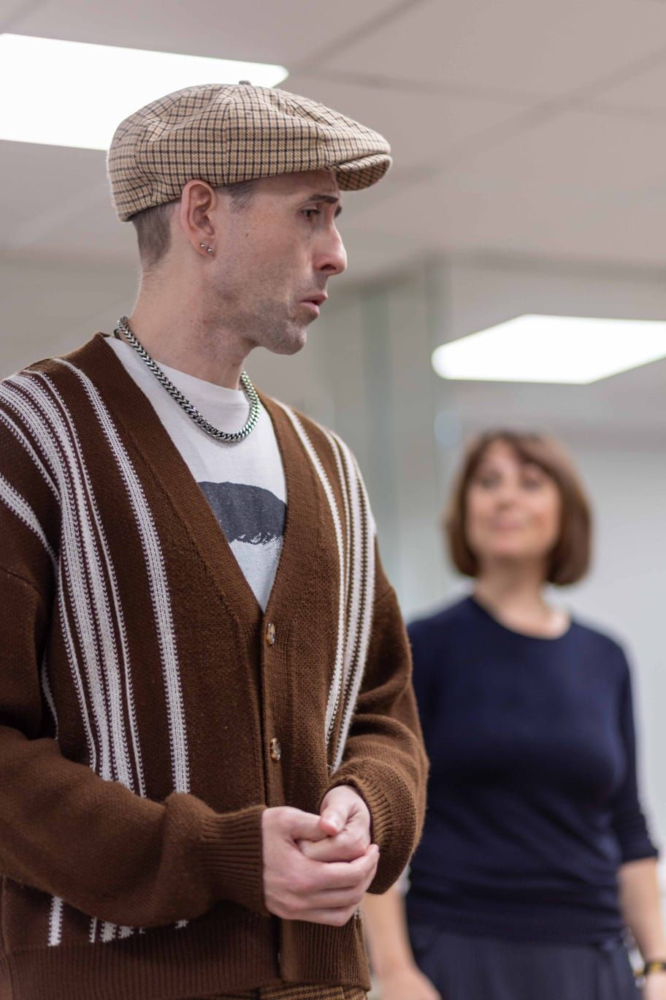
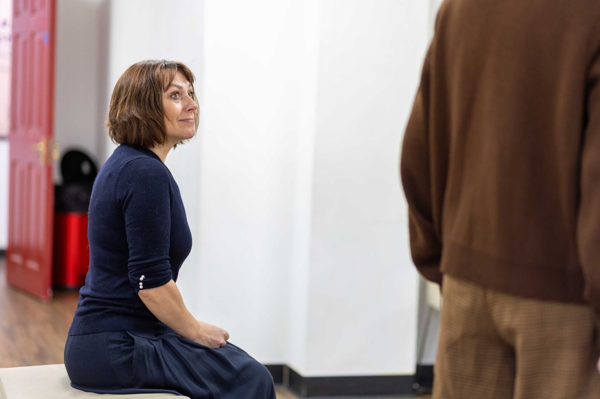
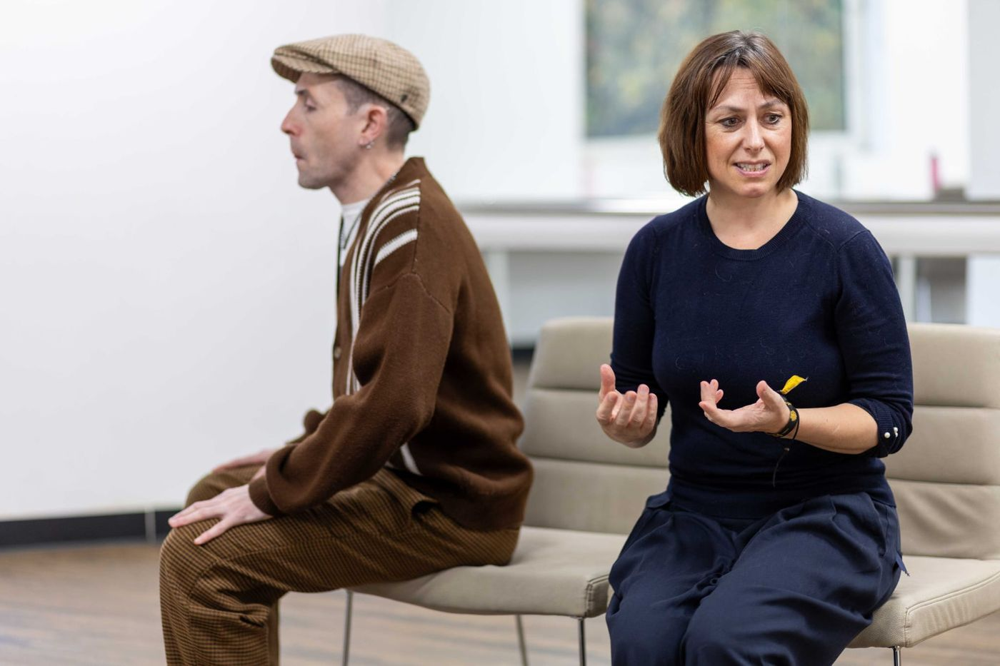
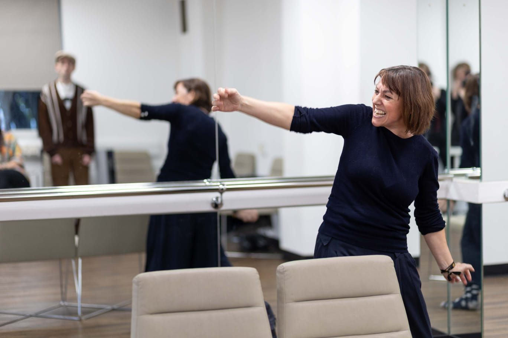
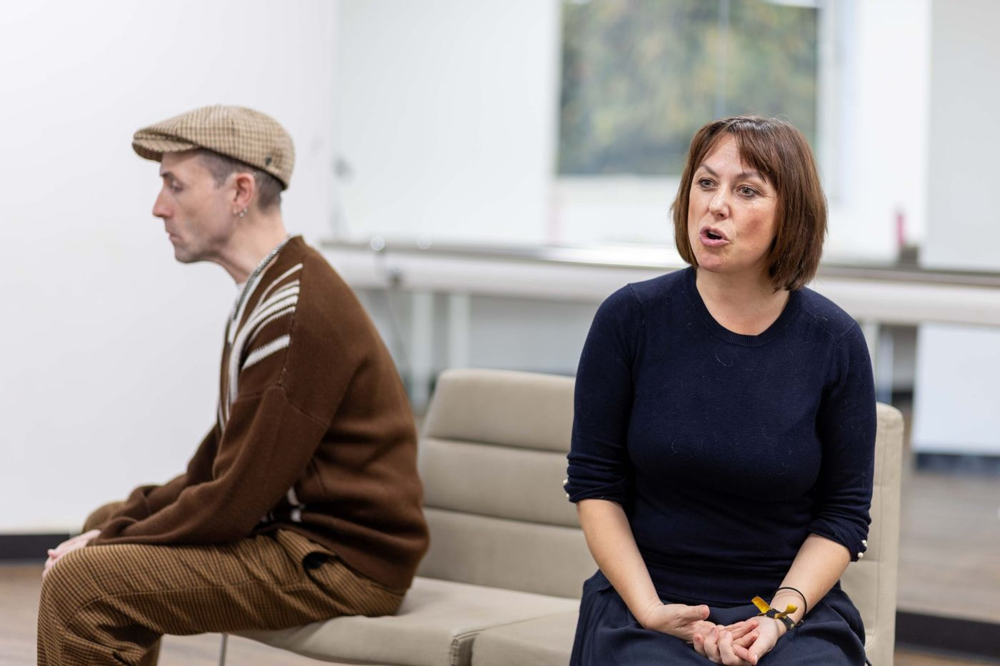
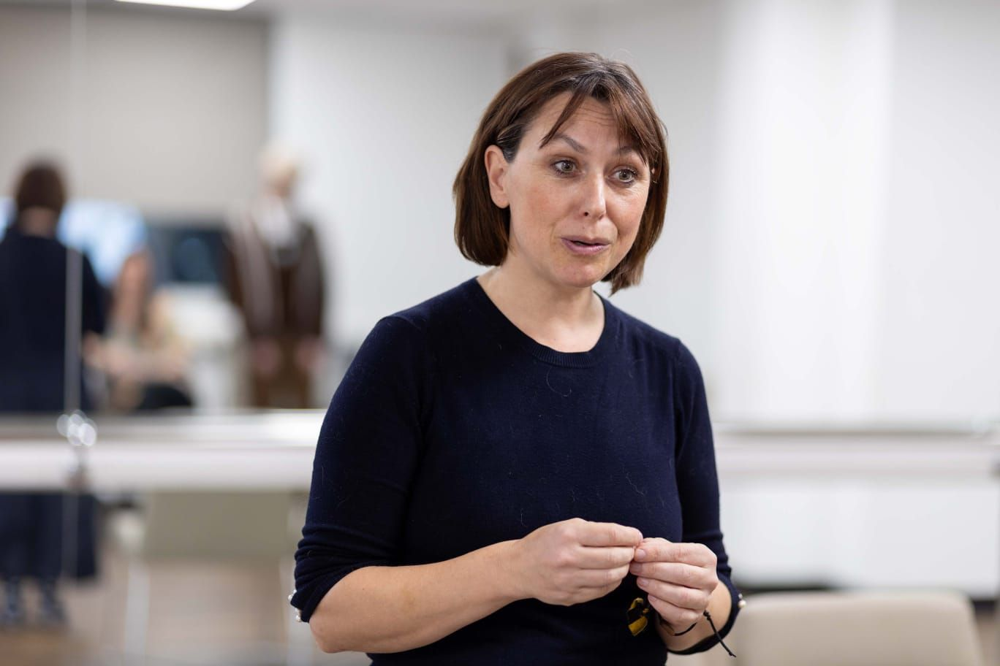
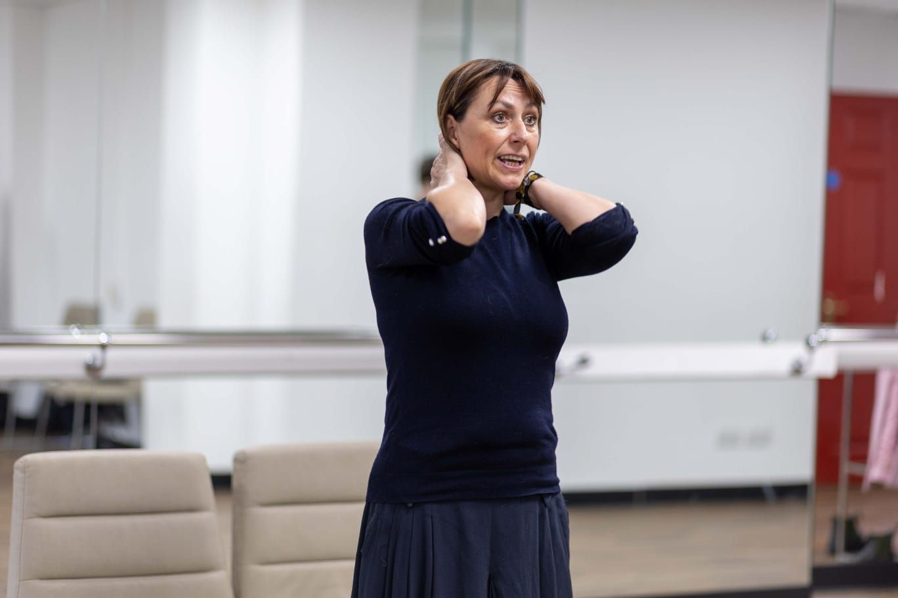

About
Sarita Plowman
Sarita grew up without a TV, so live storytelling became a way of life from an early age – the entertainment was whatever she and her older brother could conjure in a sparsely furnished North London living room. Circus turns and homemade “operettas” became the proudly low-budget antics of “The Flying Plowmans” performed for her mother and older sister.
One theatre trip at the age of ten flipped a switch – some people do this for a job!
The Flying Plowmans have now left the living room of her childhood and ventured out into the world to create exciting, transformative, intimate and stripped back touring theatre productions.
The stage will always be my living room and the audience will always be my family – no matter the size of the auditorium, the lighting, costumes or makeup. I want the Flying Plowman experience to be as intimate, moving and thought-provoking as a living-room encounter with loved ones. I treat every performance as a potential ‘first theatre’ experience, channelling as much energy and attention to detail as possible so audiences leave with a sense of awe and wonder for live storytelling.Sarita Plowman
Interview
In conversation with Sarita Plowman A Youngish Perspective – on producing and acting in the Flying Plowman’s first production, YOU by Mark Wilson.Behind the scenes
In rehearsal









Now touring
Discover YOU
A powerful play about separation, longing and the invisible ties that bind us.